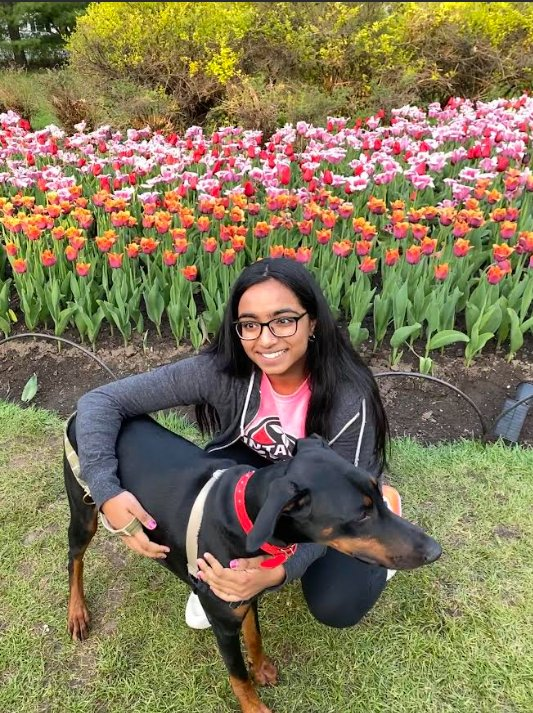

Hi! My name is Sharanya (pronounced: shah-ren-yah). I am a Bachelor of Commerce student at Queen's University, building a career across industry and academia with a focus on human capital management. Currently, I am a SSHRC-funded research fellow at the Smith School of Business, where I study emerging DEI topics like non-native accent bias and learning orientation in flexible work. My focus on human capital stems from a deep-rooted passion for community. Before my business degree, I graduated from the 14th cohort of Ottawa's Female Firefighters in Training Program and served as a Student Trustee for the Ottawa-Carleton District School Board, representing over 75,000 students!
Background
I am one of 50 recipients of the Chancellor's Scholarship at Queen's University, awarded for community involvement and academic leadership. As a Commerce student, I believe resilient organizations require the seamless integration of finance, people, and operations. My work spans human capital management, digital media and writing, sustainability finance, and supply chain strategy.
As an Undergraduate Research Fellow at the Smith School of Business, my project experience includes designing Qualtrics survey instruments on workplace civility, evaluating LLM prompt strategies to code over 10,000 freelancer profiles for learning orientation, and conducting interdisciplinary literature reviews on non-native accent bias in the workplace.
Beyond research, I actively contribute to campus and community organizations. On campus, I analyze ESG investment products with the Queen's Sustainable Business Initiative, write financial markets coverage for the Queen's Business Review, and build content for the Queen's Supply Chain and Operations Resource Executive. Professionally, I write on leadership strategy through a Women in Strategy fellowship at Level5 Strategy Consulting, building on prior executive experience as COO of the Ontario Student Trustees' Association.
Life Outside Work
My go-to whenever I'm watching TV and need something to keep my hands occupied.
Current read: Blacktop Wasteland by S. A. Cosby.
Go Spurs Go!
A constant connection to culture and home.

Visiting the Canadian Tulip Festival back home in Ottawa with my dog, Slash!
14th cohort of Ottawa's Female Firefighters in Training Program
Media and Publications
October 25, 2024 · Jessica Wong
K-12 schools are no strangers to AI. But inconsistent policies are making it trickier to navigate
Featured as a Grade 12 student and Student Trustee with the Ottawa Carleton District School Board, speaking to the uneven rollout of AI policies across Canadian schools and what students need from policymakers.
Read on CBC News ↗July 26, 2021
Canada should increase initial investments by CAD$150-million to GFF, help end COVID in low-income countries
A reader submission advocating for Canada to scale up its commitments to the Global Financing Facility to accelerate pandemic recovery in low-income countries.
Read in The Hill Times ↗